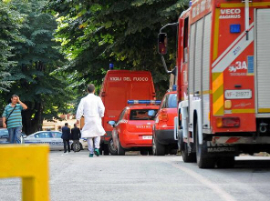

<!--        <style>.hwc-content .hwc-postcontent-0 .layout-item-0 { padding-right: 10px;padding-left: 10px;  }
            .ie7 .hwc-post .hwc-layout-cell {border:none !important; padding:0 !important; }
            .ie6 .hwc-post .hwc-layout-cell {border:none !important; padding:0 !important; }

        </style>-->

<div class="hwc-layout-wrapper">
    <div class="hwc-content-layout">
        <div class="hwc-content-layout-row">
            <div class="hwc-layout-cell hwc-content"><article class="hwc-post hwc-article">
                    <div class="hwc-postmetadataheader">
                        <h2 class="hwc-postheader">Incendio al Policlinico Umberto I evacuati pazienti della Prima Clinica</h2>
                    </div>
                    <div class="hwc-postheadericons hwc-metadata-icons">
                        <span class="hwc-postdateicon">26/04/2014</span>
                        | <span class="hwc-postauthoricon"> <a href="#" title="Posts by Admin">Angelo Passaro</a></span>
                    </div>
                    <div class="hwc-postcontent hwc-postcontent-0 clearfix"><div class="hwc-content-layout">
                            <div class="hwc-content-layout-row">
                                <div class="hwc-layout-cell layout-item-0" style="width: 100%" >
                                    <p>ROMA - Momenti di paura per un incendio divampato venerdì mattina nella Prima Clinica chirurgica del Policlinico Umberto I, nella Capitale. Alcuni pazienti sono stati evacuati in via precauzionale dai vigili del fuoco, intervenuti sul posto con cinque squadre.<!--CUT--> Le fiamme sarebbero scaturite intorno alle 7 da una macchinetta del caffè lasciata sul fuoco in una saletta adiacente alle sale operatorie, utilizzata dal personale sanitario; poi hanno interessato le stanze nei pressi dell’ingresso di via Lancisi, al piano interrato. Non si segnalano feriti. <abbr title="Avenue"></abbr><br></p>
                                </div>
                            </div>
                        </div>
                    </div>
                    <div class="hwc-postfootericons hwc-metadata-icons">
                        <span class="hwc-postcommentsicon"><a href="#comments" title="Comments">0 Commenti »</a></span>
                    </div>


                </article></div>
        </div>
    </div>
</div>
